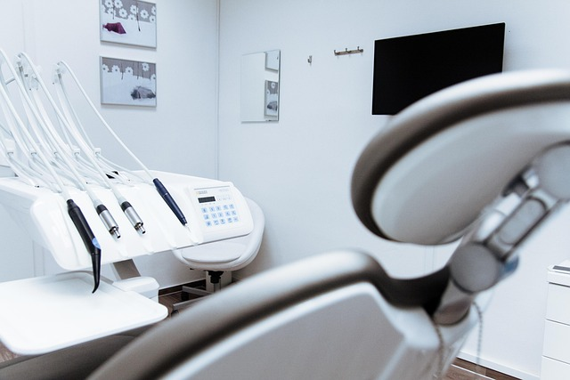

About Purple Rain Dental Clinic
Your trusted dental clinic, committed to quality care and a comfortable experience for every patient.

Our Story
Purple Rain Dental Clinic was established to bring reliable, professional dental care to our community and surrounding areas. We believe everyone deserves access to quality oral healthcare in a welcoming environment.
Our clinic is designed to put you at ease: a clean, modern space with up-to-date equipment and a team that cares.
Patient Care Comes First
We focus on your comfort and trust. From the first consultation to follow-up care, our team is here to listen and deliver the quality treatment you deserve.
Our Mission
To provide excellent dental services—from routine check-ups to specialized treatments—while putting patient comfort and education first. We aim to be a trusted dentist for families and individuals.
Our Values
- Quality: We use modern practices and maintain high standards in every procedure.
- Care: We treat every patient with respect and attention to their needs.
- Trust: We build long-term relationships through honest communication and reliable care.
Visit Us
We are located at 21 Amudipe Street, Ebenezer African Church Area, Akure, Ondo State, Nigeria. For appointments, call 08111615853 or 08033807912, or email purplerain32.oa@gmail.com.
Get Directions & Contact